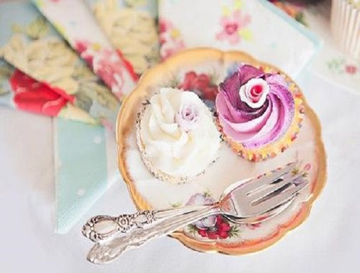

<!-- /////////////////////////////////////////Content -->
<div id="page-content">
<div id="main-content">
<div class="container">
<article>
	<div class="heading">
		<h2>
			<span class="hr">博客</span>
		</h2>
	</div>
	<div class="row">
	<!-- 循环的开始 -->
{% for post in site.posts %}
		<div class="col-md-6">
			<div class="clearfix box-archive">
				<div class="col-md-6">
					
				</div>				
				<div class="col-md-6">
					<div class="wrapper">
						<h3>冰淇淋蛋糕</h3>
						<p>(你们懂得...)抓住一个人的心首先要抓住她的胃办公室生存法则新技能草莓蛋糕了解一下草莓季一眨眼就过去了再不吃就来不及啦草...</p>
						<a class="btn btn-1" href="#">阅读更多<</a>
					</div>
				</div>
			</div>
		</div>
{% endfor %}
	<!-- 循环的结束 -->
		</div>
	</div>
</article>
</div>
</div>
</div>

